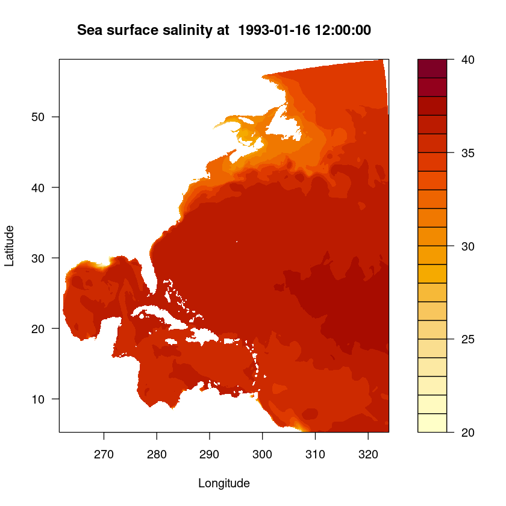
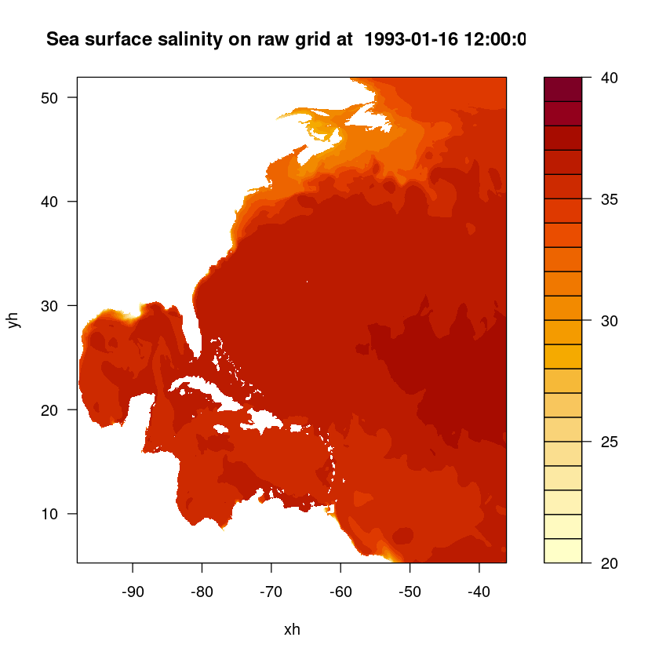

library("ncdf4")--------------------------------------------------------------------------- NameError Traceback (most recent call last) Cell In[1], line 1 ----> 1 library("ncdf4") NameError: name 'library' is not defined
The following notebook is a quick demonstration on how to use R to access the OPeNDAP server data. See the full CEFI OPeNDAP info here. This is designed for users that prefer the programing interface to be R. There are already couple of great resource related to preprocessing and visualizing data in R. Therefore, the notebook will not repeat that part of the code but focusing on how to accessing the data from a R interface. The resources is listed below
In addition to the standard R code demonstrated below, our current interface leverages JupyterLab to execute R code using the R kernel. To enable this functionality, we utilize the environment.yml file to create a Conda/Mamba environment. The primary objective is to install the r-irkernel package within this environment.
See these instructions for setting up the CEFI environment in the NMFS Jupyter Hub.
This installation of r-irkernel through Conda/Mamba ensures that the R kernel becomes available as an option when launching JupyterLab. Selecting the R kernel empowers users to utilize the JupyterLab interface for running R code effortlessly. Specifically the conda environment includes:
- r-irkernel
- r-rerddap
- r-ncdf4
- r-maps
- r-reticulate
- r-dplyr
- r-ggplot2To use R to access the OPeNDAP server directly from your R script or R-notebook, you will need - ncdf4
There are couple of ways to install the packages, here we provide two popular ways below 1. In the R environment, install.packages('<package name>') 2. In the conda/mamba environment for package version control, conda install r-<package name> or mamba install r-<package name> (many r package can be install this way by adding “r-” in front of the package name)
The way to import packages to the current R environment is to use the require or library functions Both functions will import the package but with subtle different of > The require() and library() functions can both be used to load packages in R, but they have one subtle difference: > > - require() will output a warning if a package is not installed and then continue to execute the code. > - library() will output an error and stop the execution of the code.
Detail explanation can be find here
library("ncdf4")--------------------------------------------------------------------------- NameError Traceback (most recent call last) Cell In[1], line 1 ----> 1 library("ncdf4") NameError: name 'library' is not defined
With the help of the ncdf4 package we are able to load the data that is hosted on the OPeNDAP server and grab the coordinate and attribute without the need to downloading the entire dataset.
Reading Understanding of the OPeNDAP server and what it provides is highly recommended before reading the following intructions.
# Specify the OPeNDAP server URL (using regular grid output)
url <- "http://psl.noaa.gov/thredds/dodsC/Projects/CEFI/regional_mom6/northwest_atlantic/hist_run/regrid/ocean_monthly.199301-201912.sos.nc"
# Open a NetCDF file lazily and remotely
ncopendap <- nc_open(url)There is a 500MB limit per request so making sure the data request each time is not over the limit. For loop to seperate the request is one of the solution to avoid the single time request becoming to large.
Here we only request a single slice in the time domain but the whole northeast Atlantic domain in the regional mom6 model. Since this is the part that actually downloading the data. It would takes a bit longer.
# Read the data into memory
timeslice = 1
lon <- ncvar_get(ncopendap, "lon")
lat <- ncvar_get(ncopendap, "lat")
time <- ncvar_get(ncopendap, "time",start = c(timeslice), count = c(1))
# Read a slice of the data into memory
sos <- ncvar_get(ncopendap, "sos", start = c(1, 1, timeslice), count = c(-1, -1, 1))# the matrix output of sea surface salinity
sos| NA | NA | NA | NA | NA | NA | NA | NA | NA | NA | ⋯ | NA | NA | NA | NA | NA | NA | NA | NA | NA | NA |
| NA | NA | NA | NA | NA | NA | NA | NA | NA | NA | ⋯ | NA | NA | NA | NA | NA | NA | NA | NA | NA | NA |
| NA | NA | NA | NA | NA | NA | NA | NA | NA | NA | ⋯ | NA | NA | NA | NA | NA | NA | NA | NA | NA | NA |
| NA | NA | NA | NA | NA | NA | NA | NA | NA | NA | ⋯ | NA | NA | NA | NA | NA | NA | NA | NA | NA | NA |
| NA | NA | NA | NA | NA | NA | NA | NA | NA | NA | ⋯ | NA | NA | NA | NA | NA | NA | NA | NA | NA | NA |
| NA | NA | NA | NA | NA | NA | NA | NA | NA | NA | ⋯ | NA | NA | NA | NA | NA | NA | NA | NA | NA | NA |
| NA | NA | NA | NA | NA | NA | NA | NA | NA | NA | ⋯ | NA | NA | NA | NA | NA | NA | NA | NA | NA | NA |
| NA | NA | NA | NA | NA | NA | NA | NA | NA | NA | ⋯ | NA | NA | NA | NA | NA | NA | NA | NA | NA | NA |
| NA | NA | NA | NA | NA | NA | NA | NA | NA | NA | ⋯ | NA | NA | NA | NA | NA | NA | NA | NA | NA | NA |
| NA | NA | NA | NA | NA | NA | NA | NA | NA | NA | ⋯ | NA | NA | NA | NA | NA | NA | NA | NA | NA | NA |
| NA | NA | NA | NA | NA | NA | NA | NA | NA | NA | ⋯ | NA | NA | NA | NA | NA | NA | NA | NA | NA | NA |
| NA | NA | NA | NA | NA | NA | NA | NA | NA | NA | ⋯ | NA | NA | NA | NA | NA | NA | NA | NA | NA | NA |
| NA | NA | NA | NA | NA | NA | NA | NA | NA | NA | ⋯ | NA | NA | NA | NA | NA | NA | NA | NA | NA | NA |
| NA | NA | NA | NA | NA | NA | NA | NA | NA | NA | ⋯ | NA | NA | NA | NA | NA | NA | NA | NA | NA | NA |
| NA | NA | NA | NA | NA | NA | NA | NA | NA | NA | ⋯ | NA | NA | NA | NA | NA | NA | NA | NA | NA | NA |
| NA | NA | NA | NA | NA | NA | NA | NA | NA | NA | ⋯ | NA | NA | NA | NA | NA | NA | NA | NA | NA | NA |
| NA | NA | NA | NA | NA | NA | NA | NA | NA | NA | ⋯ | NA | NA | NA | NA | NA | NA | NA | NA | NA | NA |
| NA | NA | NA | NA | NA | NA | NA | NA | NA | NA | ⋯ | NA | NA | NA | NA | NA | NA | NA | NA | NA | NA |
| NA | NA | NA | NA | NA | NA | NA | NA | NA | NA | ⋯ | NA | NA | NA | NA | NA | NA | NA | NA | NA | NA |
| NA | NA | NA | NA | NA | NA | NA | NA | NA | NA | ⋯ | NA | NA | NA | NA | NA | NA | NA | NA | NA | NA |
| NA | NA | NA | NA | NA | NA | NA | NA | NA | NA | ⋯ | NA | NA | NA | NA | NA | NA | NA | NA | NA | NA |
| NA | NA | NA | NA | NA | NA | NA | NA | NA | NA | ⋯ | NA | NA | NA | NA | NA | NA | NA | NA | NA | NA |
| NA | NA | NA | NA | NA | NA | NA | NA | NA | NA | ⋯ | NA | NA | NA | NA | NA | NA | NA | NA | NA | NA |
| NA | NA | NA | NA | NA | NA | NA | NA | NA | NA | ⋯ | NA | NA | NA | NA | NA | NA | NA | NA | NA | NA |
| NA | NA | NA | NA | NA | NA | NA | NA | NA | NA | ⋯ | NA | NA | NA | NA | NA | NA | NA | NA | NA | NA |
| NA | NA | NA | NA | NA | NA | NA | NA | NA | NA | ⋯ | NA | NA | NA | NA | NA | NA | NA | NA | NA | NA |
| NA | NA | NA | NA | NA | NA | NA | NA | NA | NA | ⋯ | NA | NA | NA | NA | NA | NA | NA | NA | NA | NA |
| NA | NA | NA | NA | NA | NA | NA | NA | NA | NA | ⋯ | NA | NA | NA | NA | NA | NA | NA | NA | NA | NA |
| NA | NA | NA | NA | NA | NA | NA | NA | NA | NA | ⋯ | NA | NA | NA | NA | NA | NA | NA | NA | NA | NA |
| NA | NA | NA | NA | NA | NA | NA | NA | NA | NA | ⋯ | NA | NA | NA | NA | NA | NA | NA | NA | NA | NA |
| ⋮ | ⋮ | ⋮ | ⋮ | ⋮ | ⋮ | ⋮ | ⋮ | ⋮ | ⋮ | ⋱ | ⋮ | ⋮ | ⋮ | ⋮ | ⋮ | ⋮ | ⋮ | ⋮ | ⋮ | ⋮ |
| NA | 36.06681 | 36.06974 | 36.07292 | 36.07632 | 36.07998 | 36.08291 | 36.08522 | 36.08725 | 36.08934 | ⋯ | 34.73696 | 34.73539 | 34.73647 | 34.74131 | 34.74666 | 34.75334 | 34.75716 | 34.75456 | NA | NA |
| NA | 36.06295 | 36.06661 | 36.07045 | 36.07452 | 36.07897 | 36.08310 | 36.08648 | 36.08923 | 36.09155 | ⋯ | 34.74045 | 34.73808 | 34.73823 | 34.74231 | 34.74707 | 34.75413 | 34.75976 | 34.75694 | NA | NA |
| NA | 36.05849 | 36.06314 | 36.06780 | 36.07257 | 36.07759 | 36.08237 | 36.08672 | 36.09046 | 36.09347 | ⋯ | 34.74746 | 34.74201 | 34.74012 | 34.74227 | 34.74576 | 34.75234 | 34.75902 | 34.75777 | NA | NA |
| NA | 36.05369 | 36.05925 | 36.06476 | 36.07031 | 36.07592 | 36.08116 | 36.08618 | 36.09076 | 36.09464 | ⋯ | 34.75548 | 34.74885 | 34.74416 | 34.74366 | 34.74535 | 34.75097 | 34.75755 | 34.75734 | NA | NA |
| NA | 36.04902 | 36.05526 | 36.06161 | 36.06792 | 36.07402 | 36.07977 | 36.08530 | 36.09044 | 36.09501 | ⋯ | 34.76160 | 34.75608 | 34.75015 | 34.74781 | 34.74790 | 34.75181 | 34.75766 | 34.75819 | 34.75734 | NA |
| NA | 36.04408 | 36.05053 | 36.05745 | 36.06454 | 36.07141 | 36.07781 | 36.08392 | 36.08958 | 36.09463 | ⋯ | 34.76550 | 34.76152 | 34.75721 | 34.75390 | 34.75283 | 34.75468 | 34.75901 | 34.76021 | 34.75845 | NA |
| NA | 36.04190 | 36.04766 | 36.05413 | 36.06111 | 36.06828 | 36.07522 | 36.08199 | 36.08827 | 36.09380 | ⋯ | 34.76876 | 34.76551 | 34.76207 | 34.75816 | 34.75706 | 34.75796 | 34.76087 | 34.76239 | 34.76061 | NA |
| NA | 36.04018 | 36.04603 | 36.05214 | 36.05864 | 36.06561 | 36.07269 | 36.07980 | 36.08659 | 36.09266 | ⋯ | 34.76980 | 34.76541 | 34.76189 | 34.75913 | 34.75877 | 34.76064 | 34.76353 | 34.76416 | 34.76292 | NA |
| NA | 36.03717 | 36.04394 | 36.05040 | 36.05678 | 36.06345 | 36.07047 | 36.07769 | 36.08479 | 36.09132 | ⋯ | 34.76788 | 34.76265 | 34.75869 | 34.75768 | 34.75938 | 34.76270 | 34.76633 | 34.76665 | 34.76496 | NA |
| NA | 36.03350 | 36.04106 | 36.04810 | 36.05481 | 36.06152 | 36.06849 | 36.07570 | 36.08286 | 36.08960 | ⋯ | 34.76396 | 34.76099 | 34.76042 | 34.76034 | 34.76133 | 34.76479 | 34.76829 | 34.76902 | 34.76764 | NA |
| NA | 36.02943 | 36.03791 | 36.04574 | 36.05303 | 36.06005 | 36.06709 | 36.07425 | 36.08128 | 36.08791 | ⋯ | 34.76386 | 34.76818 | 34.77166 | 34.77100 | 34.76776 | 34.76808 | 34.76986 | 34.77100 | 34.77069 | NA |
| NA | 36.02458 | 36.03363 | 36.04208 | 36.05010 | 36.05777 | 36.06527 | 36.07266 | 36.07973 | 36.08626 | ⋯ | 34.76764 | 34.77813 | 34.78325 | 34.78295 | 34.77775 | 34.77345 | 34.77206 | 34.77309 | 34.77344 | NA |
| NA | 36.01963 | 36.02950 | 36.03859 | 36.04711 | 36.05532 | 36.06328 | 36.07097 | 36.07821 | 36.08479 | ⋯ | 34.76589 | 34.77855 | 34.78933 | 34.79220 | 34.78659 | 34.77967 | 34.77597 | 34.77587 | 34.77601 | NA |
| NA | 36.01572 | 36.02608 | 36.03551 | 36.04424 | 36.05259 | 36.06091 | 36.06899 | 36.07661 | 36.08349 | ⋯ | 34.75874 | 34.77301 | 34.78843 | 34.79423 | 34.79357 | 34.78385 | 34.78009 | 34.77915 | 34.77828 | NA |
| NA | 36.01262 | 36.02339 | 36.03323 | 36.04221 | 36.05057 | 36.05886 | 36.06705 | 36.07491 | 36.08214 | ⋯ | 34.75564 | 34.77016 | 34.78686 | 34.79307 | 34.79391 | 34.78737 | 34.78199 | 34.78096 | 34.78004 | NA |
| NA | 36.00889 | 36.01962 | 36.02956 | 36.03890 | 36.04763 | 36.05627 | 36.06479 | 36.07304 | 36.08072 | ⋯ | 34.75578 | 34.77051 | 34.78710 | 34.79151 | 34.79279 | 34.78922 | 34.78222 | 34.78127 | 34.78144 | NA |
| NA | 36.00357 | 36.01318 | 36.02231 | 36.03156 | 36.04055 | 36.04980 | 36.05910 | 36.06818 | 36.07665 | ⋯ | 34.75756 | 34.77338 | 34.78811 | 34.78880 | 34.78954 | NA | NA | NA | NA | NA |
| NA | 35.99727 | 36.00686 | 36.01548 | 36.02365 | 36.03199 | 36.04065 | 36.04974 | 36.05908 | 36.06821 | ⋯ | NA | NA | NA | NA | NA | NA | NA | NA | NA | NA |
| NA | 35.99375 | 36.00301 | 36.01150 | 36.01948 | 36.02755 | 36.03580 | 36.04436 | 36.05302 | 36.06137 | ⋯ | NA | NA | NA | NA | NA | NA | NA | NA | NA | NA |
| NA | 35.99067 | 35.99976 | 36.00843 | 36.01677 | 36.02492 | 36.03313 | 36.04148 | 36.04988 | 36.05798 | ⋯ | NA | NA | NA | NA | NA | NA | NA | NA | NA | NA |
| NA | 35.98929 | 35.99733 | 36.00493 | 36.01240 | 36.02032 | 36.02892 | 36.03785 | 36.04679 | 36.05525 | ⋯ | NA | NA | NA | NA | NA | NA | NA | NA | NA | NA |
| NA | 35.98853 | 35.99566 | 36.00272 | 36.00967 | 36.01695 | 36.02480 | 36.03326 | 36.04210 | 36.05079 | ⋯ | NA | NA | NA | NA | NA | NA | NA | NA | NA | NA |
| NA | 35.98984 | 35.99562 | 36.00151 | 36.00760 | 36.01403 | 36.02109 | 36.02871 | 36.03672 | 36.04471 | ⋯ | NA | NA | NA | NA | NA | NA | NA | NA | NA | NA |
| NA | 35.99236 | 35.99694 | 36.00180 | 36.00718 | 36.01291 | 36.01927 | 36.02615 | 36.03342 | 36.04070 | ⋯ | NA | NA | NA | NA | NA | NA | NA | NA | NA | NA |
| NA | 35.99572 | 35.99891 | 36.00230 | 36.00635 | 36.01140 | 36.01728 | 36.02369 | 36.03047 | 36.03728 | ⋯ | NA | NA | NA | NA | NA | NA | NA | NA | NA | NA |
| NA | 35.99943 | 36.00193 | 36.00453 | 36.00752 | 36.01143 | 36.01679 | 36.02267 | 36.02894 | 36.03537 | ⋯ | NA | NA | NA | NA | NA | NA | NA | NA | NA | NA |
| NA | 36.00339 | 36.00506 | 36.00668 | 36.00868 | 36.01175 | 36.01678 | 36.02245 | 36.02861 | 36.03501 | ⋯ | NA | NA | NA | NA | NA | NA | NA | NA | NA | NA |
| NA | 36.00587 | 36.00730 | 36.00890 | 36.01093 | 36.01387 | 36.01844 | 36.02397 | 36.03017 | 36.03662 | ⋯ | NA | NA | NA | NA | NA | NA | NA | NA | NA | NA |
| NA | 36.00937 | 36.01059 | 36.01206 | 36.01410 | 36.01703 | 36.02140 | 36.02668 | 36.03267 | 36.03910 | ⋯ | NA | NA | NA | NA | NA | NA | NA | NA | NA | NA |
| 36.00972 | 36.01036 | 36.01167 | 36.01402 | 36.01757 | 36.02230 | 36.02740 | 36.03313 | 36.03950 | 36.04632 | ⋯ | NA | NA | NA | NA | NA | NA | NA | NA | NA | NA |
The origial time would be only in the unit of time “days since 1993-01-01”. In order to understand what is the actual time. We need to grab the time unit and the time number and convert to a datetime object.
# Get the units
tunits <- ncatt_get(ncopendap, "time", "units")
datesince <- tunits$value
datesince <- substr(datesince, nchar(datesince)-9, nchar(datesince))
datesince# convert the number to datetime (input should be in second while the time is in unit of days)
datetime_var <- as.POSIXct(time*86400, origin=datesince, tz="UTC")
datetime_var[1] "1993-01-16 12:00:00 UTC"filled.contour(lon, lat, sos, main = paste("Sea surface salinity at ", datetime_var), xlab = "Longitude", ylab = "Latitude", levels = pretty(c(20,40), 20))
df <- expand.grid(X = lon, Y = lat)
data <- as.vector(t(sos))
df$Data <- data
names(df) <- c("lon", "lat", "sos")df| lon | lat | sos |
|---|---|---|
| <dbl[1d]> | <dbl[1d]> | <dbl> |
| 261.5577 | 5.272542 | NA |
| 261.6384 | 5.272542 | NA |
| 261.7191 | 5.272542 | NA |
| 261.7998 | 5.272542 | NA |
| 261.8804 | 5.272542 | NA |
| 261.9611 | 5.272542 | NA |
| 262.0418 | 5.272542 | NA |
| 262.1225 | 5.272542 | NA |
| 262.2031 | 5.272542 | NA |
| 262.2838 | 5.272542 | NA |
| 262.3645 | 5.272542 | NA |
| 262.4452 | 5.272542 | NA |
| 262.5258 | 5.272542 | NA |
| 262.6065 | 5.272542 | NA |
| 262.6872 | 5.272542 | NA |
| 262.7679 | 5.272542 | NA |
| 262.8485 | 5.272542 | NA |
| 262.9292 | 5.272542 | NA |
| 263.0099 | 5.272542 | NA |
| 263.0906 | 5.272542 | NA |
| 263.1713 | 5.272542 | NA |
| 263.2519 | 5.272542 | NA |
| 263.3326 | 5.272542 | NA |
| 263.4133 | 5.272542 | NA |
| 263.4940 | 5.272542 | NA |
| 263.5746 | 5.272542 | NA |
| 263.6553 | 5.272542 | NA |
| 263.7360 | 5.272542 | NA |
| 263.8167 | 5.272542 | NA |
| 263.8973 | 5.272542 | NA |
| ⋮ | ⋮ | ⋮ |
| 321.5804 | 58.16076 | NA |
| 321.6611 | 58.16076 | NA |
| 321.7418 | 58.16076 | NA |
| 321.8224 | 58.16076 | NA |
| 321.9031 | 58.16076 | NA |
| 321.9838 | 58.16076 | NA |
| 322.0645 | 58.16076 | NA |
| 322.1451 | 58.16076 | NA |
| 322.2258 | 58.16076 | NA |
| 322.3065 | 58.16076 | NA |
| 322.3872 | 58.16076 | NA |
| 322.4679 | 58.16076 | NA |
| 322.5485 | 58.16076 | NA |
| 322.6292 | 58.16076 | NA |
| 322.7099 | 58.16076 | NA |
| 322.7906 | 58.16076 | NA |
| 322.8712 | 58.16076 | NA |
| 322.9519 | 58.16076 | NA |
| 323.0326 | 58.16076 | NA |
| 323.1133 | 58.16076 | NA |
| 323.1939 | 58.16076 | NA |
| 323.2746 | 58.16076 | NA |
| 323.3553 | 58.16076 | NA |
| 323.4360 | 58.16076 | NA |
| 323.5166 | 58.16076 | NA |
| 323.5973 | 58.16076 | NA |
| 323.6780 | 58.16076 | NA |
| 323.7587 | 58.16076 | NA |
| 323.8393 | 58.16076 | NA |
| 323.9200 | 58.16076 | NA |
Let’s proceed to load a more complex data structure, specifically the raw grid structure from the regional MOM6 output. This time besides the data itself we also need to load the grid structure that is stored in another file
# Specify the OPeNDAP server URL (using regular grid output)
url <- "http://psl.noaa.gov/thredds/dodsC/Projects/CEFI/regional_mom6/northwest_atlantic/hist_run/ocean_monthly.199301-201912.sos.nc"
url_static <- "http://psl.noaa.gov/thredds/dodsC/Projects/CEFI/regional_mom6/northwest_atlantic/hist_run/ocean_static.nc"
# Open a NetCDF file lazily and remotely
ncopendap <- nc_open(url)
ncstaticopendap <- nc_open(url_static)# Read the data into memory
timeslice = 1
lon <- ncvar_get(ncstaticopendap, "geolon")
lat <- ncvar_get(ncstaticopendap, "geolat")
x <- ncvar_get(ncopendap, "xh")
y <- ncvar_get(ncopendap, "yh")
time <- ncvar_get(ncopendap, "time",start = c(timeslice), count = c(1))
# Read a slice of the data into memory
sos <- ncvar_get(ncopendap, "sos", start = c(1, 1, timeslice), count = c(-1, -1, 1))# the matrix output of sea surface salinity in raw grid
sos| NA | NA | NA | NA | NA | NA | NA | NA | NA | NA | ⋯ | NA | NA | NA | NA | NA | NA | NA | NA | NA | NA |
| NA | NA | NA | NA | NA | NA | NA | NA | NA | NA | ⋯ | NA | NA | NA | NA | NA | NA | NA | NA | NA | NA |
| NA | NA | NA | NA | NA | NA | NA | NA | NA | NA | ⋯ | NA | NA | NA | NA | NA | NA | NA | NA | NA | NA |
| NA | NA | NA | NA | NA | NA | NA | NA | NA | NA | ⋯ | NA | NA | NA | NA | NA | NA | NA | NA | NA | NA |
| NA | NA | NA | NA | NA | NA | NA | NA | NA | NA | ⋯ | NA | NA | NA | NA | NA | NA | NA | NA | NA | NA |
| NA | NA | NA | NA | NA | NA | NA | NA | NA | NA | ⋯ | NA | NA | NA | NA | NA | NA | NA | NA | NA | NA |
| NA | NA | NA | NA | NA | NA | NA | NA | NA | NA | ⋯ | NA | NA | NA | NA | NA | NA | NA | NA | NA | NA |
| NA | NA | NA | NA | NA | NA | NA | NA | NA | NA | ⋯ | NA | NA | NA | NA | NA | NA | NA | NA | NA | NA |
| NA | NA | NA | NA | NA | NA | NA | NA | NA | NA | ⋯ | NA | NA | NA | NA | NA | NA | NA | NA | NA | NA |
| NA | NA | NA | NA | NA | NA | NA | NA | NA | NA | ⋯ | NA | NA | NA | NA | NA | NA | NA | NA | NA | NA |
| NA | NA | NA | NA | NA | NA | NA | NA | NA | NA | ⋯ | NA | NA | NA | NA | NA | NA | NA | NA | NA | NA |
| NA | NA | NA | NA | NA | NA | NA | NA | NA | NA | ⋯ | NA | NA | NA | NA | NA | NA | NA | NA | NA | NA |
| NA | NA | NA | NA | NA | NA | NA | NA | NA | NA | ⋯ | NA | NA | NA | NA | NA | NA | NA | NA | NA | NA |
| NA | NA | NA | NA | NA | NA | NA | NA | NA | NA | ⋯ | NA | NA | NA | NA | NA | NA | NA | NA | NA | NA |
| NA | NA | NA | NA | NA | NA | NA | NA | NA | NA | ⋯ | NA | NA | NA | NA | NA | NA | NA | NA | NA | NA |
| NA | NA | NA | NA | NA | NA | NA | NA | NA | NA | ⋯ | NA | NA | NA | NA | NA | NA | NA | NA | NA | NA |
| NA | NA | NA | NA | NA | NA | NA | NA | NA | NA | ⋯ | NA | NA | NA | NA | NA | NA | NA | NA | NA | NA |
| NA | NA | NA | NA | NA | NA | NA | NA | NA | NA | ⋯ | NA | NA | NA | NA | NA | NA | NA | NA | NA | NA |
| NA | NA | NA | NA | NA | NA | NA | NA | NA | NA | ⋯ | NA | NA | NA | NA | NA | NA | NA | NA | NA | NA |
| NA | NA | NA | NA | NA | NA | NA | NA | NA | NA | ⋯ | NA | NA | NA | NA | NA | NA | NA | NA | NA | NA |
| NA | NA | NA | NA | NA | NA | NA | NA | NA | NA | ⋯ | NA | NA | NA | NA | NA | NA | NA | NA | NA | NA |
| NA | NA | NA | NA | NA | NA | NA | NA | NA | NA | ⋯ | NA | NA | NA | NA | NA | NA | NA | NA | NA | NA |
| NA | NA | NA | NA | NA | NA | NA | NA | NA | NA | ⋯ | NA | NA | NA | NA | NA | NA | NA | NA | NA | NA |
| NA | NA | NA | NA | NA | NA | NA | NA | NA | NA | ⋯ | NA | NA | NA | NA | NA | NA | NA | NA | NA | NA |
| NA | NA | NA | NA | NA | NA | NA | NA | NA | NA | ⋯ | NA | NA | NA | NA | NA | NA | NA | NA | NA | NA |
| NA | NA | NA | NA | NA | NA | NA | NA | NA | NA | ⋯ | NA | NA | NA | NA | NA | NA | NA | NA | NA | NA |
| NA | NA | NA | NA | NA | NA | NA | NA | NA | NA | ⋯ | NA | NA | NA | NA | NA | NA | NA | NA | NA | NA |
| NA | NA | NA | NA | NA | NA | NA | NA | NA | NA | ⋯ | NA | NA | NA | NA | NA | NA | NA | NA | NA | NA |
| NA | NA | NA | NA | NA | NA | NA | NA | NA | NA | ⋯ | NA | NA | NA | NA | NA | NA | NA | NA | NA | NA |
| NA | NA | NA | NA | NA | NA | NA | NA | NA | NA | ⋯ | NA | NA | NA | NA | NA | NA | NA | NA | NA | NA |
| ⋮ | ⋮ | ⋮ | ⋮ | ⋮ | ⋮ | ⋮ | ⋮ | ⋮ | ⋮ | ⋱ | ⋮ | ⋮ | ⋮ | ⋮ | ⋮ | ⋮ | ⋮ | ⋮ | ⋮ | ⋮ |
| 35.73732 | 35.75211 | 35.76775 | 35.78499 | 35.80399 | 35.82481 | 35.84669 | 35.86594 | 35.88427 | 35.90309 | ⋯ | 34.74183 | 34.74885 | 34.75530 | 34.76198 | 34.77347 | 34.78117 | 34.79150 | 34.80341 | 34.80744 | 34.80382 |
| 35.74347 | 35.75854 | 35.77417 | 35.79116 | 35.80922 | 35.82854 | 35.84929 | 35.87097 | 35.89220 | 35.91507 | ⋯ | 34.74007 | 34.74696 | 34.75406 | 34.76025 | 34.76946 | 34.77598 | 34.78709 | 34.79802 | 34.80235 | 34.79925 |
| 35.74872 | 35.76469 | 35.78144 | 35.79950 | 35.81799 | 35.83715 | 35.85671 | 35.87993 | 35.90647 | 35.93594 | ⋯ | 34.74055 | 34.74673 | 34.75273 | 34.75952 | 34.76626 | 34.77199 | 34.78374 | 34.79375 | 34.79805 | 34.79605 |
| 35.75399 | 35.77160 | 35.78994 | 35.80998 | 35.82985 | 35.84939 | 35.87028 | 35.89694 | 35.92921 | 35.96128 | ⋯ | 34.74326 | 34.74893 | 34.75588 | 34.76089 | 34.76605 | 34.77135 | 34.78198 | 34.79104 | 34.79513 | 34.79423 |
| 35.75991 | 35.78012 | 35.80180 | 35.82500 | 35.84665 | 35.86760 | 35.89351 | 35.92406 | 35.95684 | 35.98414 | ⋯ | 34.74481 | 34.75119 | 34.75701 | 34.76218 | 34.76781 | 34.77275 | 34.78088 | 34.78871 | 34.79427 | 34.79507 |
| 35.76614 | 35.79010 | 35.81643 | 35.84371 | 35.86823 | 35.89356 | 35.92362 | 35.95520 | 35.98156 | 35.99871 | ⋯ | 34.74664 | 34.75316 | 34.75920 | 34.76384 | 34.76902 | 34.77319 | 34.77940 | 34.78753 | 34.79428 | 34.79642 |
| 35.77184 | 35.80320 | 35.83549 | 35.86644 | 35.89510 | 35.92461 | 35.95499 | 35.98087 | 35.99734 | 36.00962 | ⋯ | 34.75168 | 34.75727 | 34.76263 | 34.76563 | 34.76921 | 34.77169 | 34.78023 | 34.78937 | 34.79261 | 34.79115 |
| 35.79176 | 35.82871 | 35.86449 | 35.89830 | 35.92985 | 35.96031 | 35.98464 | 36.00058 | 36.01258 | 36.02085 | ⋯ | 34.75645 | 34.76141 | 34.76615 | 34.76857 | 34.76954 | 34.77270 | 34.78063 | 34.78531 | 34.78587 | 34.78553 |
| 35.81849 | 35.86094 | 35.89972 | 35.93602 | 35.96936 | 35.99604 | 36.01211 | 36.02367 | 36.03216 | 36.03805 | ⋯ | 34.75860 | 34.76439 | 34.76921 | 34.77116 | 34.77143 | 34.77227 | 34.77475 | 34.77716 | 34.77881 | 34.77959 |
| 35.85229 | 35.90033 | 35.94161 | 35.97860 | 36.01006 | 36.03037 | 36.04334 | 36.05209 | 36.05694 | 36.05532 | ⋯ | 34.75788 | 34.76408 | 34.77048 | 34.77503 | 34.77508 | 34.77147 | 34.77072 | 34.77249 | 34.77454 | 34.77719 |
| 35.89088 | 35.94348 | 35.98442 | 36.01878 | 36.04641 | 36.06373 | 36.07218 | 36.07386 | 36.07069 | 36.06542 | ⋯ | 34.75559 | 34.76167 | 34.76884 | 34.77396 | 34.77249 | 34.76988 | 34.76775 | 34.76955 | 34.77367 | 34.77547 |
| 35.93468 | 35.98758 | 36.02432 | 36.05505 | 36.07778 | 36.08831 | 36.08809 | 36.08439 | 36.07943 | 36.07302 | ⋯ | 34.75366 | 34.75819 | 34.76380 | 34.76355 | 34.76263 | 34.76416 | 34.76507 | 34.76950 | 34.77343 | 34.77827 |
| 35.98459 | 36.03147 | 36.06310 | 36.08709 | 36.10105 | 36.10301 | 36.09875 | 36.09341 | 36.08658 | 36.07885 | ⋯ | 34.75287 | 34.75510 | 34.75847 | 34.75804 | 34.75938 | 34.76343 | 34.76807 | 34.77243 | 34.77782 | 34.78239 |
| 36.03266 | 36.07052 | 36.09401 | 36.10909 | 36.11404 | 36.11124 | 36.10572 | 36.09956 | 36.09188 | 36.08228 | ⋯ | 34.75412 | 34.75491 | 34.75604 | 34.75639 | 34.75931 | 34.76489 | 34.77074 | 34.77544 | 34.78246 | 34.78851 |
| 36.06948 | 36.09710 | 36.11177 | 36.11891 | 36.11884 | 36.11526 | 36.11059 | 36.10513 | 36.09786 | 36.08878 | ⋯ | 34.75814 | 34.75723 | 34.75735 | 34.75822 | 34.76123 | 34.76734 | 34.77300 | 34.77911 | 34.78641 | 34.79278 |
| 36.09228 | 36.11261 | 36.12105 | 36.12352 | 36.12210 | 36.11980 | 36.11707 | 36.11308 | 36.10682 | 36.09795 | ⋯ | 34.76374 | 34.76221 | 34.76153 | 34.76190 | 34.76467 | 34.76989 | 34.77506 | 34.78184 | 34.78583 | 34.79063 |
| 36.10873 | 36.12297 | 36.12772 | 36.12782 | 36.12616 | 36.12471 | 36.12240 | 36.11840 | 36.11104 | 36.10219 | ⋯ | 34.77134 | 34.76945 | 34.76840 | 34.76893 | 34.77121 | 34.77441 | 34.77738 | 34.78075 | 34.78383 | 34.79235 |
| 36.12003 | 36.12850 | 36.13139 | 36.13056 | 36.12937 | 36.12822 | 36.12576 | 36.12041 | 36.11329 | 36.10403 | ⋯ | 34.78051 | 34.78014 | 34.77953 | 34.78069 | 34.78145 | 34.78087 | 34.77988 | 34.78026 | 34.78320 | 34.79461 |
| 36.12240 | 36.12873 | 36.13032 | 36.13067 | 36.13137 | 36.13127 | 36.12815 | 36.12268 | 36.11462 | 36.10641 | ⋯ | 34.78892 | 34.78871 | 34.78853 | 34.78832 | 34.78746 | 34.78473 | 34.78121 | 34.77990 | 34.78312 | 34.79782 |
| 36.12327 | 36.12809 | 36.12966 | 36.13176 | 36.13519 | 36.13640 | 36.13218 | 36.12464 | 36.11688 | 36.10892 | ⋯ | 34.79141 | 34.79150 | 34.79116 | 34.79100 | 34.78973 | 34.78682 | 34.78267 | 34.78022 | 34.78268 | 34.79837 |
| 36.12235 | 36.12587 | 36.12846 | 36.13327 | 36.13896 | 36.14053 | 36.13519 | 36.12803 | 36.11976 | 36.11133 | ⋯ | 34.78933 | 34.79167 | 34.79282 | 34.79296 | 34.79168 | 34.78898 | 34.78468 | 34.78143 | 34.78281 | 34.79902 |
| 36.11827 | 36.12311 | 36.12852 | 36.13622 | 36.14262 | 36.14237 | 36.13649 | 36.12973 | 36.12213 | 36.11448 | ⋯ | 34.78428 | 34.78930 | 34.79375 | 34.79462 | 34.79387 | 34.79168 | 34.78774 | 34.78355 | 34.78294 | 34.79818 |
| 36.11377 | 36.12162 | 36.13048 | 36.13988 | 36.14495 | 36.14320 | 36.13723 | 36.13057 | 36.12360 | 36.11602 | ⋯ | 34.78087 | 34.78915 | 34.79570 | 34.79795 | 34.79765 | 34.79544 | 34.79133 | 34.78603 | 34.78435 | 34.79842 |
| 36.11106 | 36.12183 | 36.13318 | 36.14381 | 36.14735 | 36.14430 | 36.13747 | 36.13098 | 36.12392 | 36.11750 | ⋯ | 34.78038 | 34.79306 | 34.79961 | 34.80222 | 34.80171 | 34.79923 | 34.79480 | 34.78858 | 34.78695 | 34.79873 |
| 36.11074 | 36.12377 | 36.13774 | 36.14756 | 36.14980 | 36.14645 | 36.13930 | 36.13240 | 36.12564 | 36.11958 | ⋯ | 34.78101 | 34.79494 | 34.80204 | 34.80565 | 34.80472 | 34.80161 | 34.79697 | 34.79111 | 34.78962 | 34.79716 |
| 36.11198 | 36.12755 | 36.14240 | 36.15292 | 36.15370 | 36.14853 | 36.14039 | 36.13404 | 36.12736 | 36.12235 | ⋯ | 34.78083 | 34.79425 | 34.80330 | 34.80870 | 34.80772 | 34.80411 | 34.79947 | 34.79444 | 34.79238 | 34.79815 |
| 36.11395 | 36.13034 | 36.14713 | 36.15790 | 36.15601 | 36.14931 | 36.14114 | 36.13492 | 36.12917 | 36.12513 | ⋯ | 34.77925 | 34.79216 | 34.80213 | 34.80917 | 34.80971 | 34.80688 | 34.80214 | 34.79800 | 34.79546 | 34.79882 |
| 36.11729 | 36.13261 | 36.15156 | 36.16260 | 36.15745 | 36.14740 | 36.13891 | 36.13419 | 36.12997 | 36.12748 | ⋯ | 34.77820 | 34.78896 | 34.79790 | 34.80653 | 34.80907 | 34.80830 | 34.80481 | 34.80073 | 34.79851 | 34.79847 |
| 36.11865 | 36.13560 | 36.15705 | 36.16481 | 36.15582 | 36.14455 | 36.13679 | 36.13355 | 36.13084 | 36.13040 | ⋯ | 34.77723 | 34.78655 | 34.79427 | 34.80303 | 34.80806 | 34.80904 | 34.80748 | 34.80367 | 34.80128 | 34.79967 |
| 36.11730 | 36.14172 | 36.16437 | 36.16450 | 36.15329 | 36.14296 | 36.13626 | 36.13550 | 36.13425 | 36.13582 | ⋯ | 34.77248 | 34.78026 | 34.78853 | 34.79757 | 34.80496 | 34.80810 | 34.80864 | 34.80613 | 34.80275 | 34.80037 |
The origial time would be only in the unit of time “days since 1993-01-01”. In order to understand what is the actual time. We need to grab the time unit and the time number and convert to a datetime object.
# Get the units
tunits <- ncatt_get(ncopendap, "time", "units")
datesince <- tunits$value
datesince <- substr(datesince, nchar(datesince)-18, nchar(datesince)-8)
datesince# convert the number to datetime (input should be in second while the time is in unit of days)
datetime_var <- as.POSIXct(time*86400, origin=datesince, tz="UTC")
datetime_var[1] "1993-01-16 12:00:00 UTC"filled.contour(x, y, sos, main = paste("Sea surface salinity on raw grid at ", datetime_var), xlab = "xh", ylab = "yh", levels = pretty(c(20,40), 20))
Since we might want the dataframe to represent the lon lat data structure. We can convert the lon, lat,(not xh,yh which represents the grid number and not the actual lon lat) and data matrix to the dataframe.
X <- as.vector(t(lon))
Y <- as.vector(t(lat))
data <- as.vector(t(sos))
df <- data.frame(
"lon" = X,
"lat" = Y,
"sos" = data
)df| lon | lat | sos |
|---|---|---|
| <dbl> | <dbl> | <dbl> |
| -98 | 5.272542 | NA |
| -98 | 5.352199 | NA |
| -98 | 5.431845 | NA |
| -98 | 5.511480 | NA |
| -98 | 5.591105 | NA |
| -98 | 5.670719 | NA |
| -98 | 5.750322 | NA |
| -98 | 5.829914 | NA |
| -98 | 5.909494 | NA |
| -98 | 5.989064 | NA |
| -98 | 6.068621 | NA |
| -98 | 6.148167 | NA |
| -98 | 6.227701 | NA |
| -98 | 6.307223 | NA |
| -98 | 6.386733 | NA |
| -98 | 6.466230 | NA |
| -98 | 6.545714 | NA |
| -98 | 6.625186 | NA |
| -98 | 6.704646 | NA |
| -98 | 6.784092 | NA |
| -98 | 6.863526 | NA |
| -98 | 6.942946 | NA |
| -98 | 7.022352 | NA |
| -98 | 7.101746 | NA |
| -98 | 7.181125 | NA |
| -98 | 7.260490 | NA |
| -98 | 7.339842 | NA |
| -98 | 7.419179 | NA |
| -98 | 7.498502 | NA |
| -98 | 7.577811 | NA |
| ⋮ | ⋮ | ⋮ |
| -36.93195 | 56.94660 | 34.74023 |
| -36.94019 | 56.98895 | 34.74160 |
| -36.94849 | 57.03125 | 34.74315 |
| -36.95685 | 57.07353 | 34.74638 |
| -36.96524 | 57.11577 | 34.74915 |
| -36.97369 | 57.15798 | 34.74821 |
| -36.98215 | 57.20015 | 34.74909 |
| -36.99069 | 57.24229 | 34.75011 |
| -36.99927 | 57.28439 | 34.75198 |
| -37.00787 | 57.32647 | 34.75169 |
| -37.01654 | 57.36850 | 34.74945 |
| -37.02524 | 57.41050 | 34.74542 |
| -37.03397 | 57.45247 | 34.74216 |
| -37.04276 | 57.49440 | 34.74070 |
| -37.05161 | 57.53630 | 34.74549 |
| -37.06049 | 57.57817 | 34.75808 |
| -37.06940 | 57.62000 | 34.76130 |
| -37.07837 | 57.66180 | 34.77727 |
| -37.08740 | 57.70356 | 34.78886 |
| -37.09647 | 57.74529 | 34.78878 |
| -37.10556 | 57.78699 | 34.78788 |
| -37.11472 | 57.82865 | 34.78782 |
| -37.12390 | 57.87028 | 34.79068 |
| -37.13315 | 57.91188 | 34.78967 |
| -37.14243 | 57.95344 | 34.78308 |
| -37.15176 | 57.99497 | 34.78175 |
| -37.16113 | 58.03646 | 34.78161 |
| -37.17056 | 58.07793 | 34.78364 |
| -37.18005 | 58.11936 | 34.78035 |
| -37.18954 | 58.16076 | 34.77749 |